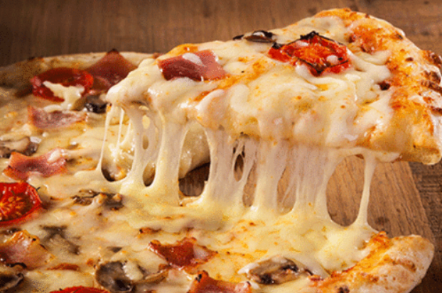

SOME OF MY FAVOURITE
FOODS
PIZZA
Pizza comes in a very big of taste depending on incredients,making the size and texture etc.On their own,they taste pretty good
To know more about Pizza
FRIED CHICKEN
Each country has its unique seasoning and preferred cut of chicken,but the base flavour is still the same.

To know more about Fried Chicken
VEG SALAD
Your body can get the much-neede fibre with salads.Fibre's job is to reduce cholestrol and digestion.
also make you feel and prevent you from overeating.
To know more about Salad